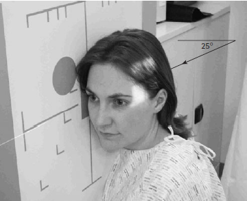

Temporal-Mandibular Joint((Lateral 25 degrees Caudad)
Centering point:Using a well-collimated beam or an extension cone, the central
ray is angled 25 degrees caudally and will be centred to a
point 5 cm superior to the joint remote from the cassette so
the central ray passes through the joint nearer the cassette.

Cassette Size:24cm x 30cm (12 x 10 ins)
Landscape
Exposure Factors:75kVp on
20mAs
FFD:100cm
Bucky/Grid:Moving or Stationary Grid
Filter:No
Collimation:Collimate to include area of interest
Pathologies:Fracture
Position of patient and cassette
- It is usual to examine both temporal-mandibular joints. For
each side, a projection is obtained with the mouth open as far as
possible and then another projection with the mouth closed. An
additional projection may be required with the teeth clenched.
- The patient sits facing the vertical Bucky or skull unit cassette
holder or lies prone on the Bucky table. In all cases, the head
is rotated to bring the side of the head under examination in
contact with the table. The shoulders may also be rotated
slightly to help the patient achieve this position.
- The head and Bucky or cassette holder level is adjusted so the
centre cross-lines are positioned to coincide with a point 1 cm
along the orbito-meatal baseline anterior to the external
auditory meatus.
- The median sagittal plane is brought parallel to the cassette by
ensuring that the inter-pupillary line is at right-angles to the
table top and the nasion and external occipital protuberance
are equidistant from it.
- The cassette is placed longitudinally in the cassette holder,
such that two exposures can be made without superimposition
of the images.